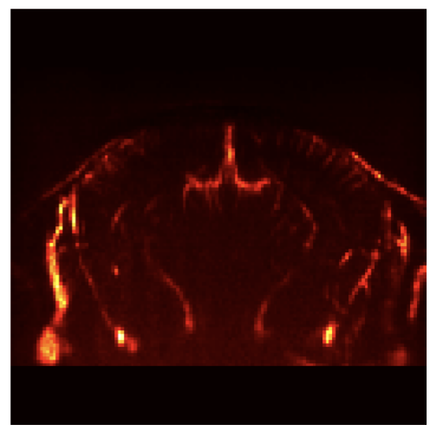
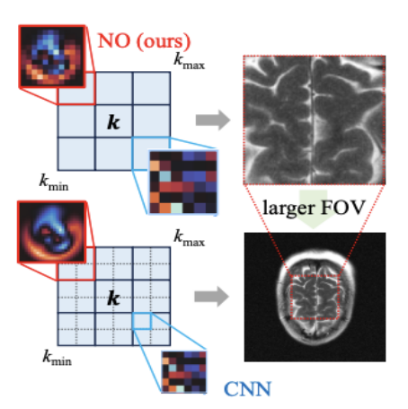
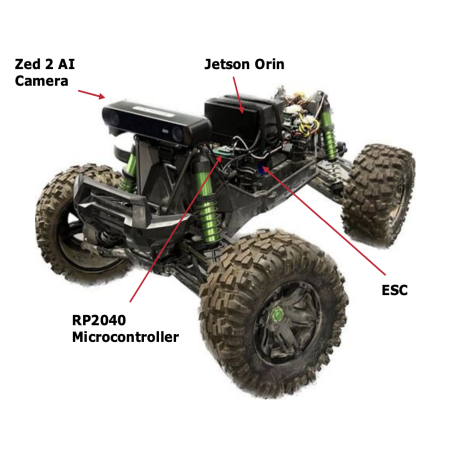
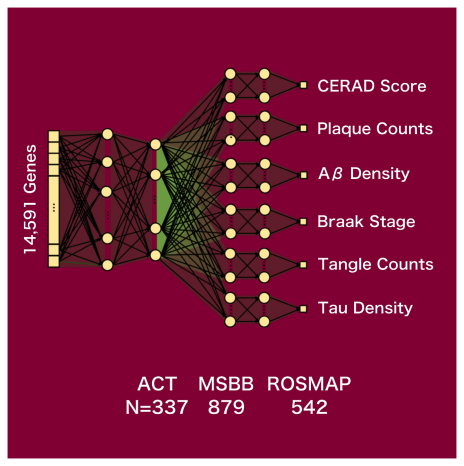

Courant Institute of Mathematical Sciences, NYU
I am an incoming Ph.D. student in the Computer Science department at NYU’s Courant Institute of Mathematical Sciences.
In my time at Caltech, I am grateful to have been mentored by Professors
and was fortunate to be mentored by Bahareh Tolooshams, Anima Anandkumar,
Soon-Jo Chung,
and Katie Bouman.
My research seeks to understand and model the hidden dynamics of complex systems—particularly the brain—by combining representation learning, inverse-problem methodology, and generative AI.
For more info, please find my CV here.
News
I graduated from Caltech!
I will be starting my PhD at NYU Courant this Fall!
I'm applying to PhD Programs for admission in Fall 2025!
Selected Publications
EquiReg: Symmetry-driven regularization for physically grounded diffusion-based inverse solvers
Building Physically Plausible World Models at ICML 2025 [paper]

VARS-fUSI: Variable Sampling for Fast and Efficient Functional Ultrasound Imaging using Neural Operators
Submitted to Nature Communications [paper]

A Unified Model for Compressed Sensing MRI Across Undersampling Patterns
CVPR 2025 [paper]
Posters/ Talks

Multi-Modal Diffusion Models to Reconstruct Dark Matter Fields
In Preparation, 2025 [code]


Feature Selection using Explainable AI to Refine Associations between Prominent Genes and Alzheimer’s Disease Neuropathology
SURF Seminar at Caltech, 2022 [paper]